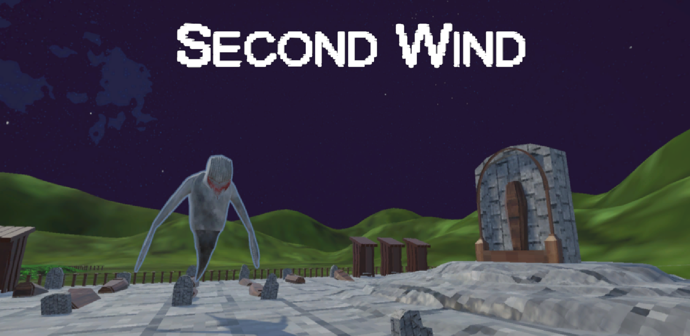

Second Wind
Project Details
This rogue-like game was made during a 2 day game jam at UCI. This project was created by a team of 8 students.

Weapons
I created a modular weapon system with scriptable objects that allowed the team to easily create new weapons within a short amount of time. By the end of the jam, our team was able to produce 5+ different weapons. Each with varying characteristics.
Character Movement
The movement in this project is inspired by the modern Doom titles. The fast-paced and snappy movement intensifies gameplay and makes the player feel powerful.
×